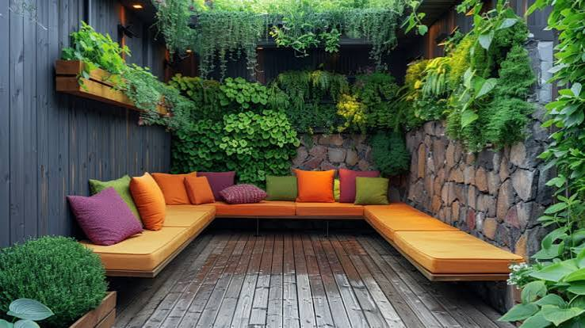
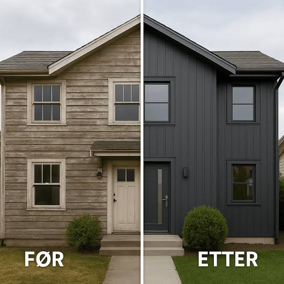
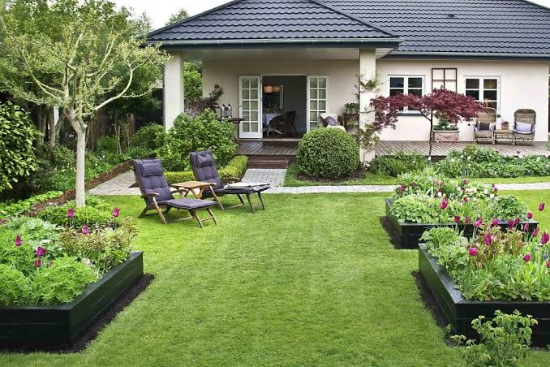
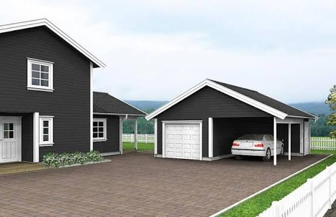

Kjøkken
Kjøkken er et viktig rom i boligen din, og en god oppussing kan gjøre det til et mer behagelig og funksjonelt sted.
Skal du pusse opp boligen din? Vi har samlet noen tips og råd for å hjelpe deg med å få mest mulig ut av oppussingen din. Enten du ønsker å pusse opp innvendig eller utvendig, kan vi hjelpe deg med å finne de beste løsningene for ditt hjem. Trenger personlig hjelp til planlegging og gjennomføring av oppussingen din? Vi har samarbeidspartnere som kan hjelpe deg med dette. Ta kontakt med oss for mer informasjon om hvordan vi kan hjelpe deg med å få mest mulig ut av oppussingen din.
Kjøkken er et viktig rom i boligen din, og en god oppussing kan gjøre det til et mer behagelig og funksjonelt sted.

Et godt oppussede bad kan gi deg en følelse av luxus og velvære hver dag.

Vinduer er en viktig del av boligen din, og en god oppussing kan forbedre belysningen og utsynet.

En behagelig stue er et sentralt rom i boligen din, og en god oppussing kan gjøre det til et mer inviting sted.

En terrasse er et flott sted å slappe av og nyte været, og en god oppussing kan gjøre det til et mer behagelig sted. Vi anbefaler deg å gå inn på Montér der du kan finne inspirasjon og produkter for din terrasse.

En godt vedlikeholdt fasade kan forbedre boligens utseende og verdi. Vår samarbeidspartner fasadeprodukter.no kan gi deg råd og støtte for din fasade.

En vakker hage kan gi deg en følelse av ro og velvære, og en god oppussing kan gjøre det til et mer inviting sted. Hos Hageland finner du nøyaktig dette!

En godt vedlikeholdt garasje kan forbedre boligens funksjonalitet og verdi.